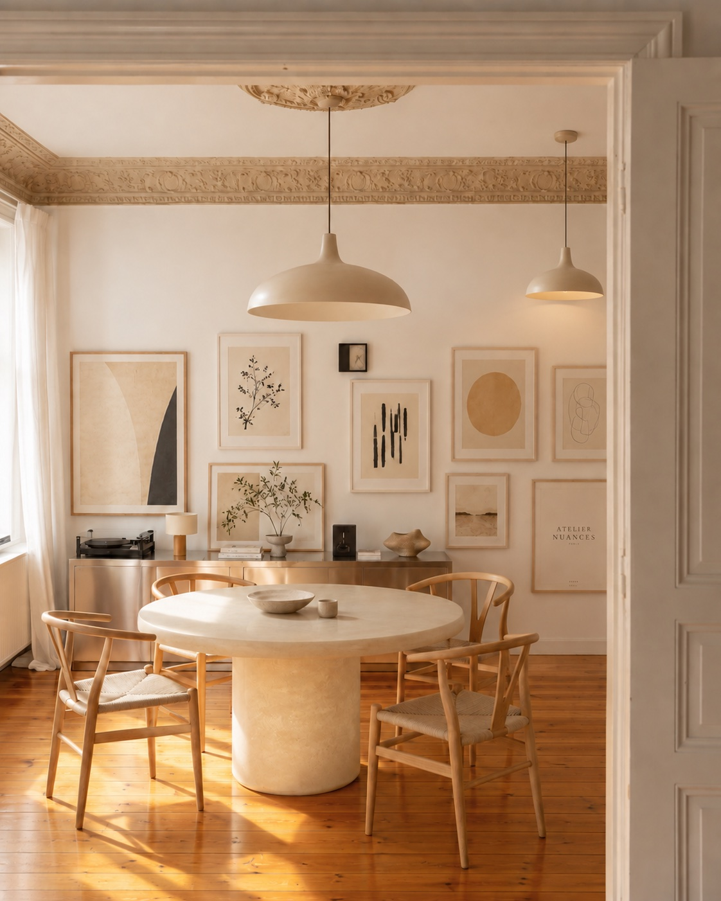
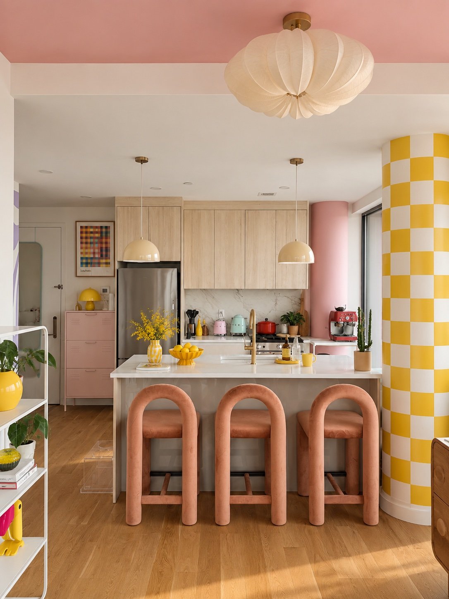
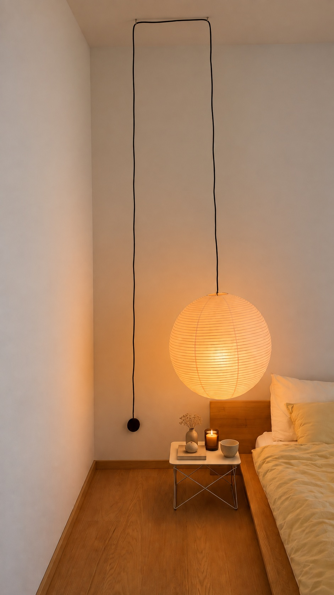
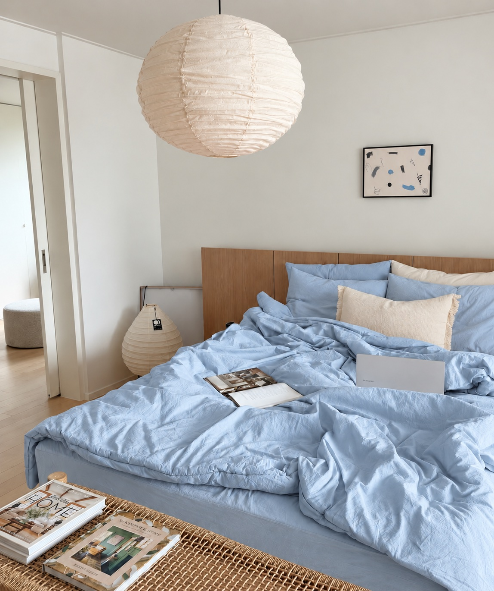
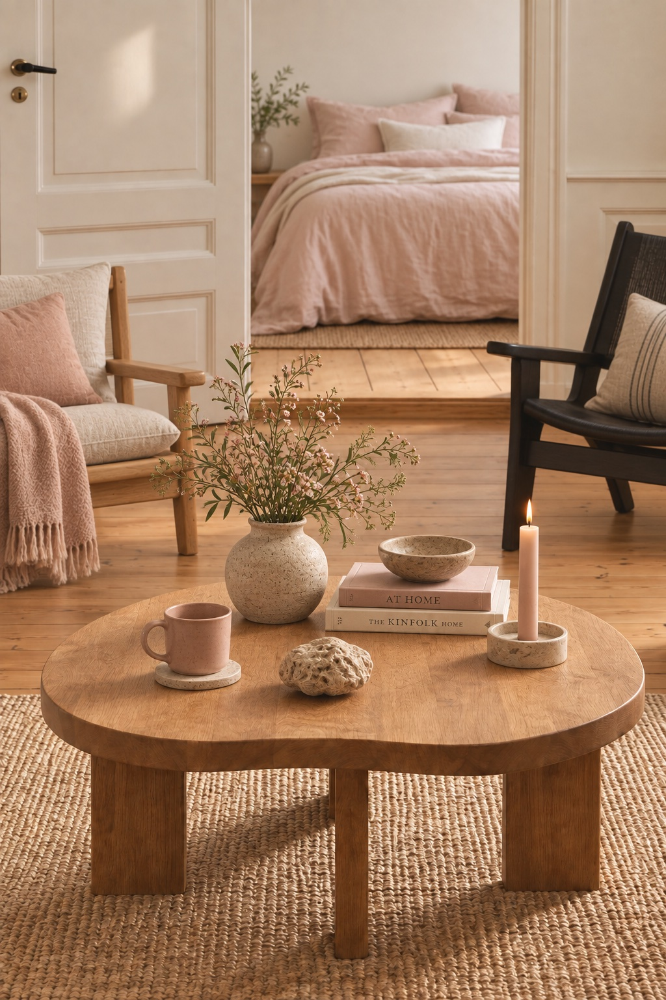
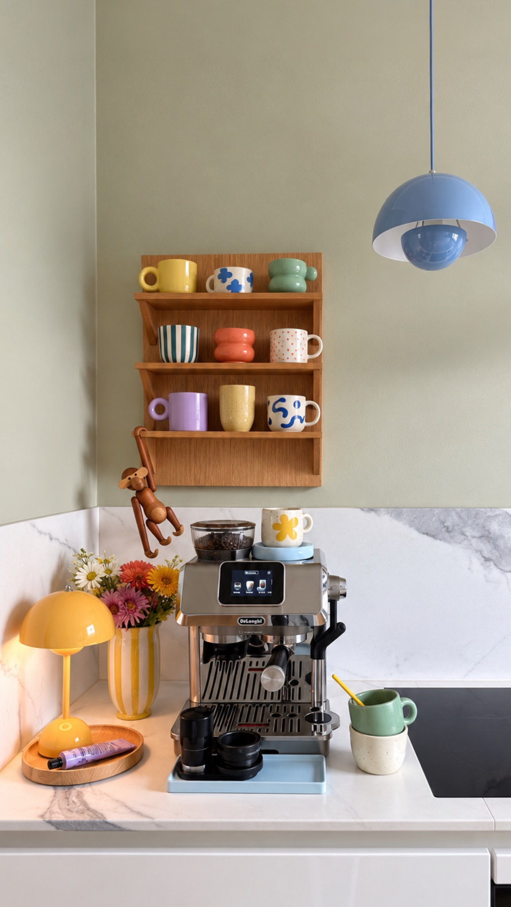

Від першого фото вашого простору до готової візуальної концепції. Ви надсилаєте фото та розповідаєте, що хочете змінити. Ми визначаємо напрямок, створюємо візуальну концепцію та разом уточнюємо деталі. Після погодження ви отримуєте фінальні візуалізації, а в пакеті із sourcing — список конкретних предметів для реалізації.
Ви надсилаєте фото, коротке відео та основні розміри простору.
Розповідаєте, що хочеться змінити, що важливо залишити та який результат вам близький.
За потреби проводимо коротку онлайн-зустріч на 15–30 хвилин.
Перед початком роботи погоджуємо пакет, обсяг роботи та бюджет майбутніх покупок.
Після погодження задачі підписуємо договір і вносимо 50% передоплати.
Далі визначаємо атмосферу майбутнього простору: колір, світло, матеріали, меблі та ключові предмети.
Спочатку погоджуємо напрямок — і лише після цього переходимо до фінальної візуалізації.
Створюємо візуальну концепцію саме для вашого простору.
Ви бачите, як меблі, світло, текстиль, колір і деталі працюють разом ще до того, як починаєте купувати.
У вартість входить один раунд правок. Усі побажання до першої версії збираються в один список.
Після погодження концепції та остаточної оплати ви отримуєте фінальні візуалізації у високій якості.
Для ROOM RESET + SOURCING додатково готуємо список предметів для реалізації концепції:




Коли красиві речі не складаються в цілісний інтер’єр, проблема не завжди в самих речах.
Ми допомагаємо побачити, чого бракує простору — ще до нових покупок. Спочатку бачимо кімнату цілісно, визначаємо, що справді варто змінити, і поєднуємо світло, колір, меблі та деталі в одну систему. Ви бачите майбутній простір ще до того, як починаєте його реалізовувати.
— Fritz Hansen«Світло й музика повністю змінюють те, як ми відчуваємо кімнату»
— Nanna Ditzel«Hygge — це не стиль інтер’єру, а спосіб створювати атмосферу: світлом, теплом, та маленькими ритуалами.»
— Børge Mogensen«Моя мета — створювати речі для людей, ставити людину в центр, а не пристосовувати її до предметів.»
— Marie Tourell Søderberg«Hygge — це маленькі моменти, які неможливо купити: особливе у звичайному дні.»

